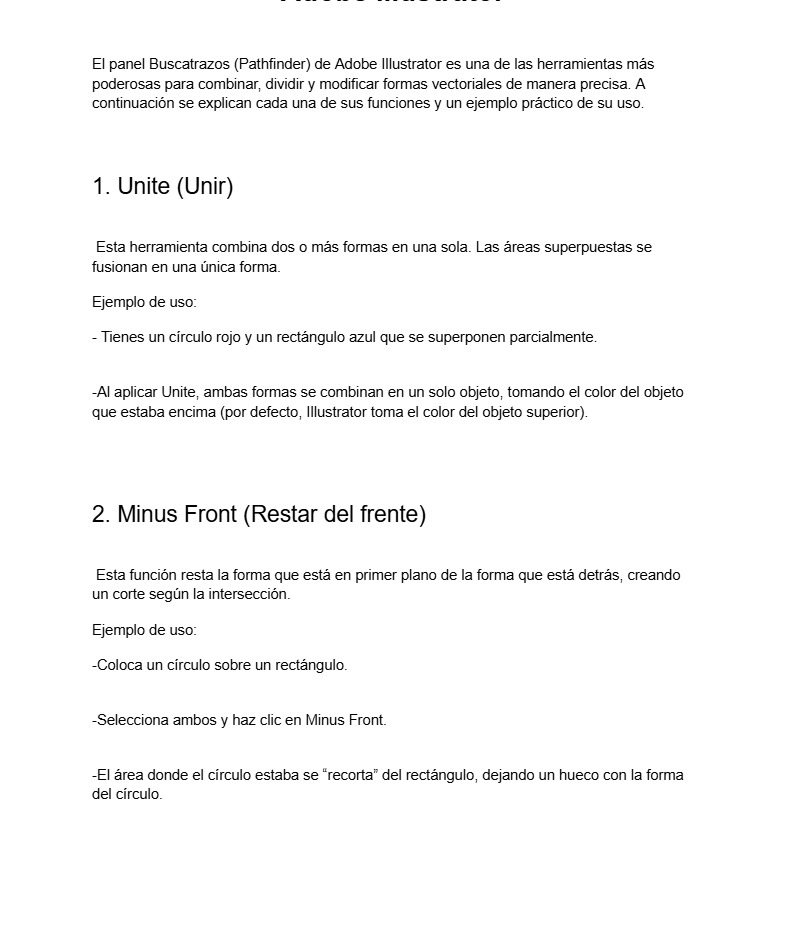
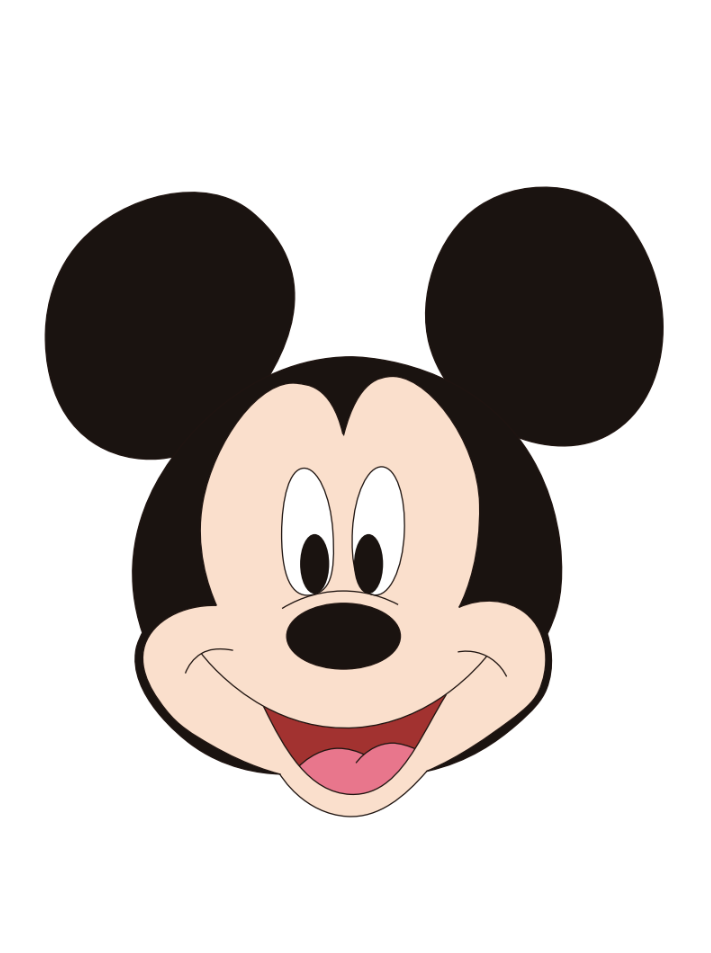
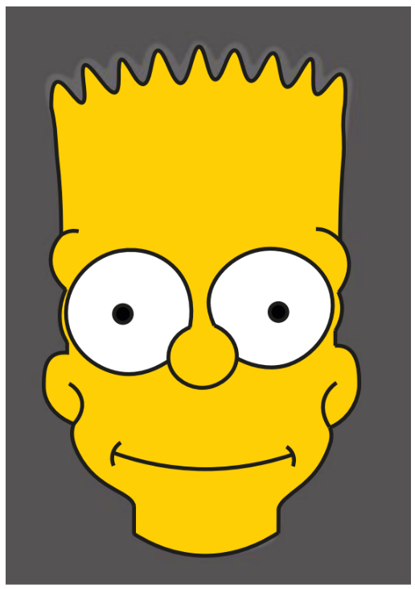

Participación 1
Panel Buscatrazos o Pathfinder
Uso del panel Pathfinder para combinar y modificar figuras vectoriales.

Práctica 4
Mickey Mouse
Ilustración digital sobre personajes animados.

Práctica 5
Bart Simpson
Desarrollo de ilustración vectorial de personajes caricaturescos.